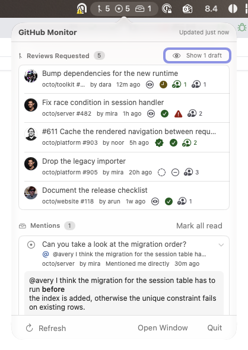
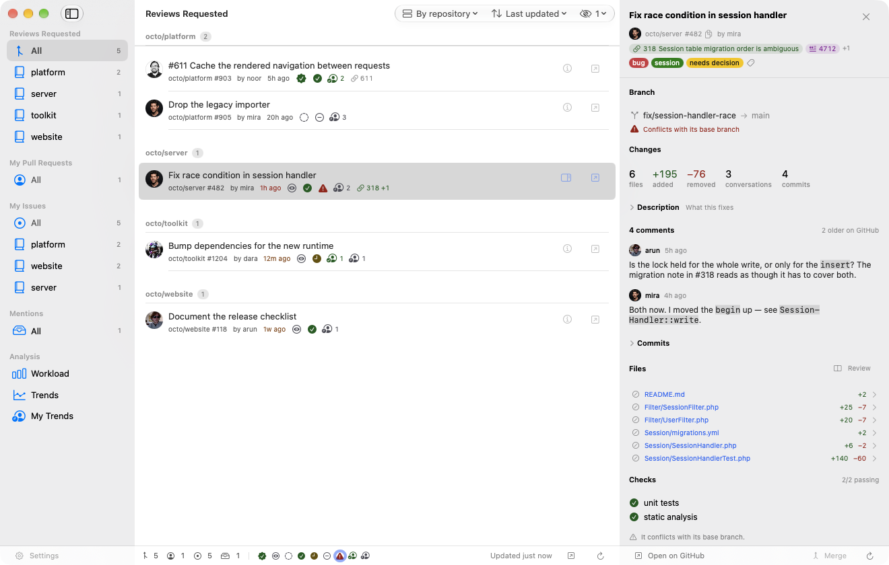
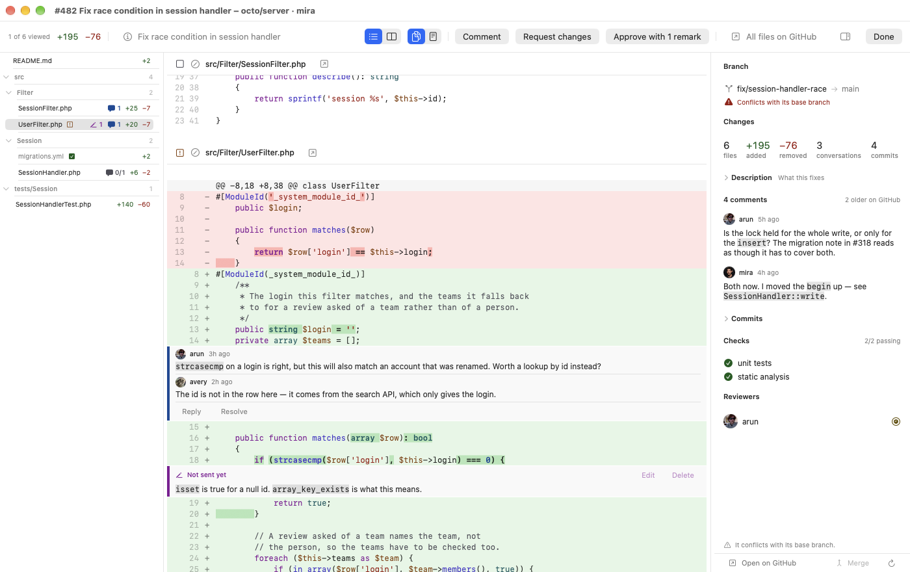
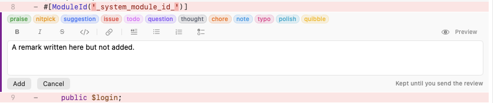
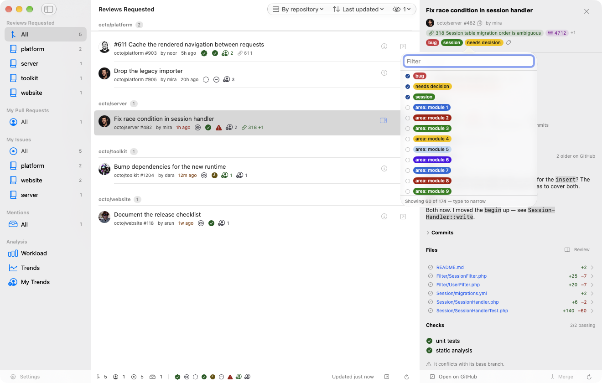
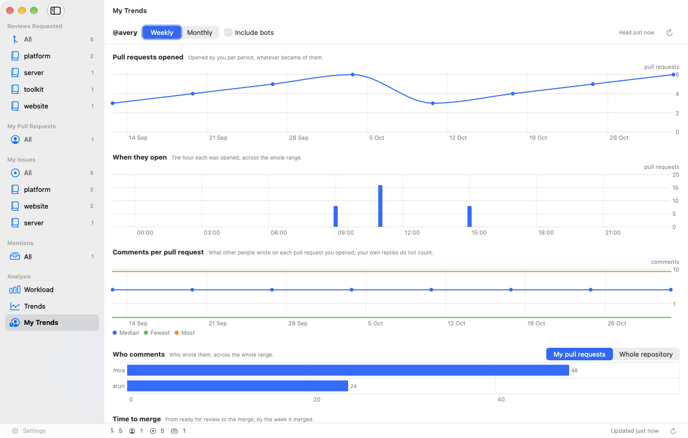
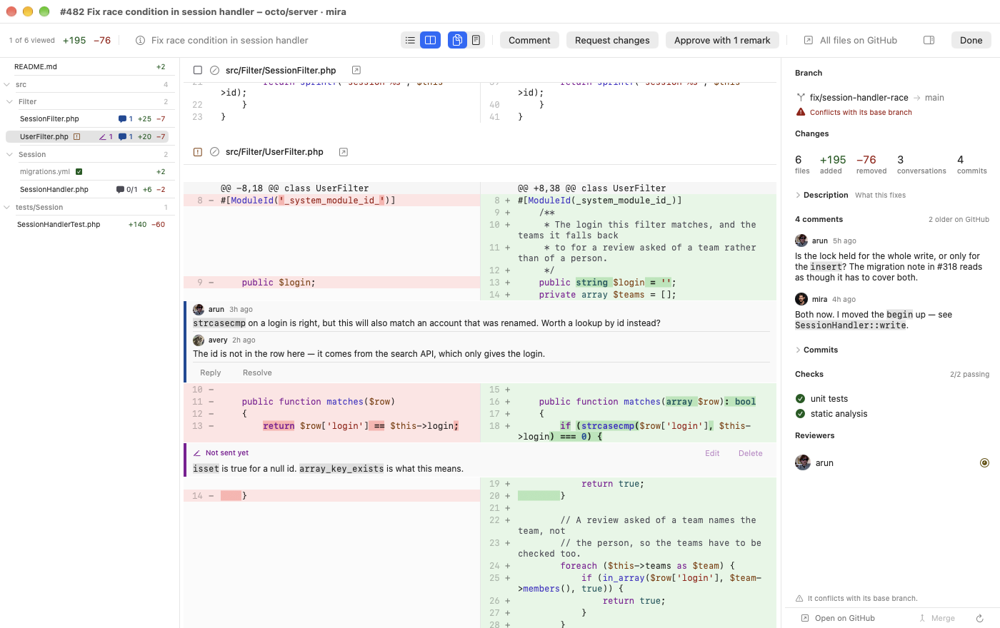
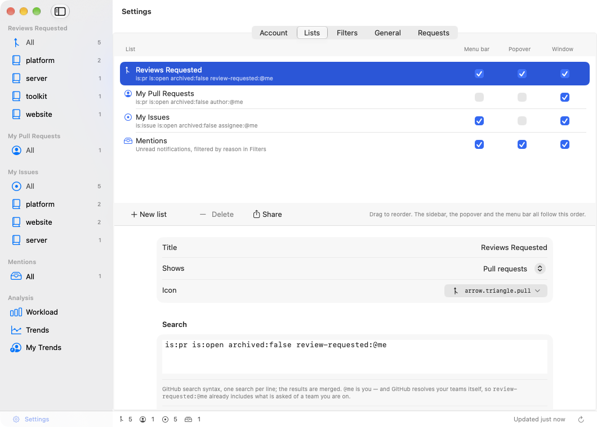
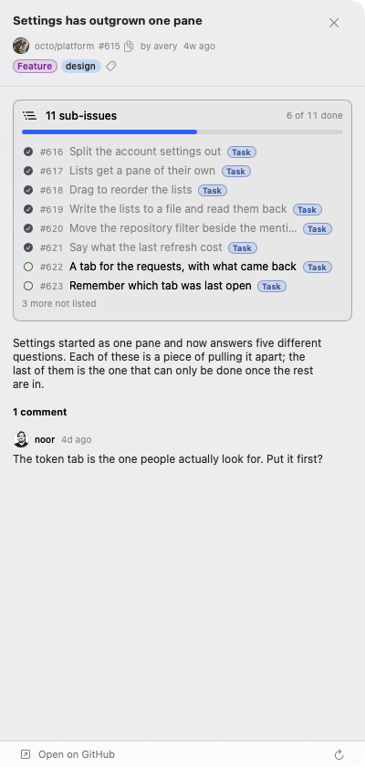
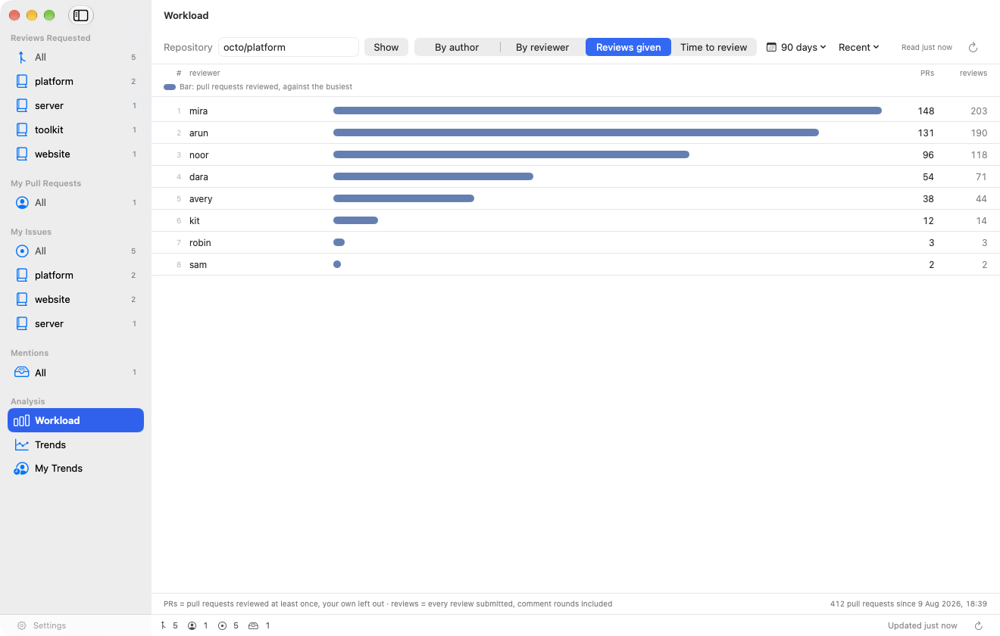

Remarks, gathered into one review
The number in the gutter turns into a plus as the pointer passes it. What you write is kept until you send the review, so the author is told once rather than five times.
A menu bar app that keeps the counts in sight — and lets you read every file's patch, write the remarks, approve and merge without opening a browser.
Free and MIT licensed · no account anywhere but GitHub






The counts live in the menu bar. Reviews requested, your own pull requests, unread mentions.
Review without leaving it
A diff read three words at a time in a 400-point pane is not read. Clicking a file opens every file's patch in one scrolling overlay, with a tree to jump by.
Not a card over the list: a window, with the code running to the edges. Several reviews can be open at once as tabs, and a tab shows a dot while it holds remarks you have not sent.
One column is what a patch is and fits anywhere. Two columns put the old file beside the new one, which is what you want when a line was edited rather than replaced.

Buttons above the box for bold, italic, code, links, quotes and lists, with ⌘B, ⌘I, ⌘E and ⌘K — and a preview of exactly what will be sent. It is markdown that goes to GitHub, so it is markdown the box shows.
The number in the gutter turns into a plus as the pointer passes it. What you write is kept until you send the review, so the author is told once rather than five times.
The approval belongs to the commit whose diff was on screen. If somebody pushed while you were reading, it is refused rather than applied to code you did not see.
Only the ways that repository allows. What stands in the way is said rather than greyed out: a conflict, checks that have not passed, a review that was asked for and is missing.
Not the members of the repository and not whoever has touched it, but GitHub's own answer to who a mention there actually notifies. Driven entirely by the keyboard.
Each one stands at its line, settled ones shut, with the few lines of code it was about where GitHub no longer gives it a place.
A pull request's commits with each one's own checks. Pictures in a description are drawn, private attachments included. A panel summarises the issue it closes without leaving the diff.
Know what is waiting
Each list is a title and one or more GitHub searches, shown as pull requests or
as issues. @me is you, and GitHub resolves team membership itself.
Review decision, check results, whether the pull request still merges into its base branch, how far the review has got — and how long it has been waiting on you.
Write it in GitHub's own syntax, one search per line, results merged. Each list says what it shows, which symbol it carries, and where it appears — the window, the popover, the menu bar, or any of the three.

GitHub's own relation, not a number read out of prose. An epic lists its children with how far through them it is; the far commoner case — an issue that is somebody's sub-task — says what it belongs to.

The ones an item carries are shown and can be set and cleared against the repository's own list — searchable where it runs to hundreds, with the ones already on it first.
The counts live in the menu bar and the popover gives the short overview — the lists you marked for it, and the unread mentions from the notifications API.
Analysis
Three views, all drawn from the same data the lists use.
Workload is one repository's open pull requests per author, ready and draft as separate segments, plus who does the reviewing and how long the rest of the team waits. Trends follows a repository over time. My Trends is about you.
Named columns, a bar in the row, and a footer under each saying how its numbers are counted — so a ranking can be argued with rather than only looked at.

Stay out of the way
No account anywhere but GitHub. The token lives in the keychain, and nothing
else is contacted — api.github.com and avatars.githubusercontent.com, that is all.
A classic personal access token with repo, notifications and read:org. Nothing is sent anywhere else, and nothing is written to disk that would outlive the question it answers.
Settings report what GitHub actually charged for the last refresh and what that comes to over an hour — GitHub's own figure, not an estimate. Polling stops before the allowance does.
When, which call, the status, how long it took, what the allowance had left — and where something went wrong, what GitHub actually said. The successes too, because a log holding only failures cannot say whether anything was working in between.
Native SwiftUI on macOS 26, using the system's own glass materials rather than reproducing them. No Electron, no Dock icon, no tray of background services.
Install
Homebrew asks you to trust a tap that is not its own before it will run anything from it — the middle line is that consent, and it is needed once.
$ brew tap sidler/tap $ brew trust --cask sidler/tap/githubmonitor $ brew install --cask githubmonitor # or take the zip from the latest release
The app has no Dock icon while it is only watching — look for it in the menu bar. Opening the window gives it one, and closing the window takes it away again.
At github.com/settings/tokens → Generate new token (classic), with an expiry you are comfortable with.
repo for pull requests including private ones, notifications for the mention threads, read:org so the app can offer your teams.
Under Settings → Account. It goes straight to the keychain. When it expires the menu bar icon says so.
Free, open source, and it asks for nothing but a token.